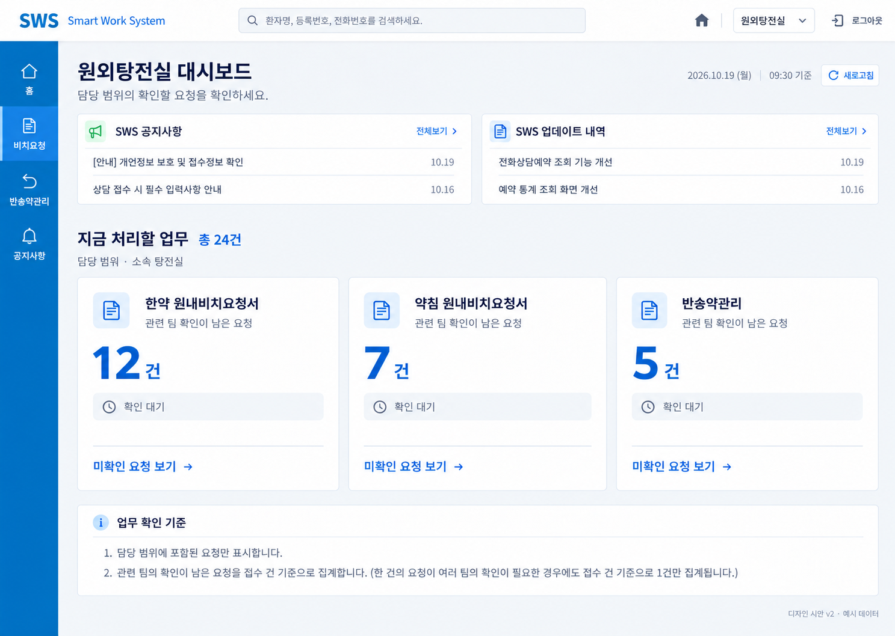
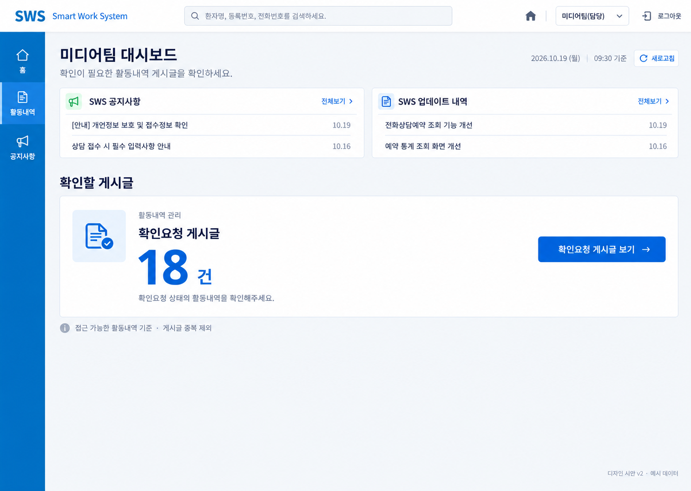

관리자 / 운영자
원본 이미지 열기
고객지원
원본 이미지 열기


원외탕전실
원본 이미지 열기
미디어팀(담당)
원본 이미지 열기
수정본 4종 + 추가 권한 2종 · 2026.10.19 · 모든 건수와 내용은 예시 데이터입니다.
이미지 검토용 자료입니다. 화면 속 버튼·검색·차트는 동작하지 않습니다.
저장 위치: D:\GitHub\jaseng-aio\docs\design\dashboard\2026-10-19-v2
이 파일과 PNG 이미지 6개를 같은 폴더에 두고 브라우저에서 열어주세요.

